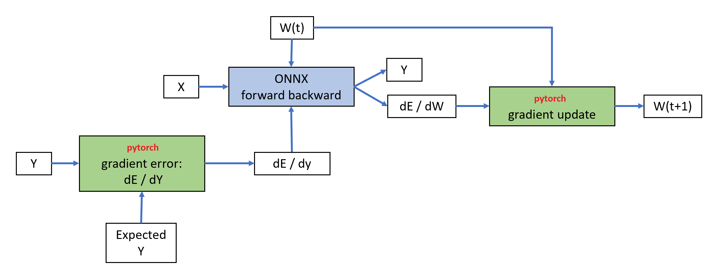

Note
Click here to download the full example code
Benchmark, comparison torch - forward-backward¶
The benchmark compares the processing time between pytorch and onnxruntime-training on a linear regression and a neural network. This example starts from Train a linear regression with forward backward but uses pytorch to replace the parts updating the gradients and computing the error gradient. The training algorithm becomes:
Class TrainingAgent (from onnxruntime-training) is still used and wrapped into ORTModule. This script then follows the same instructions as Benchmark, comparison scikit-learn - forward-backward to compare pytorch only against pytorch and onnxruntime-training.
First comparison: neural network¶
import time
import numpy
from pandas import DataFrame
import torch
from onnxruntime import get_device
from onnxruntime.training.ortmodule import ORTModule
from pyquickhelper.pycode.profiling import profile, profile2graph
from sklearn.datasets import make_regression
from sklearn.model_selection import train_test_split
X, y = make_regression(2000, n_features=100, bias=2)
X = X.astype(numpy.float32)
y = y.astype(numpy.float32)
X_train, X_test, y_train, y_test = train_test_split(X, y)
Common parameters and training algorithm¶
def from_numpy(v, device=None, requires_grad=False):
"""
Convers a numpy array into a torch array and
sets *device* and *requires_grad*.
"""
v = torch.from_numpy(v)
if device is not None:
v = v.to(device)
v.requires_grad_(requires_grad)
return v
Training, two functions with same code but it is easier to distinguish between in the profiling.
def train_model_torch(model, device, x, y, n_iter=100, learning_rate=1e-5,
profiler=None):
model = model.to(device)
x = from_numpy(x, requires_grad=True, device=device)
y = from_numpy(y, requires_grad=True, device=device)
criterion = torch.nn.MSELoss(reduction='sum')
optimizer = torch.optim.SGD(model.parameters(), lr=learning_rate)
losses = []
for t in range(n_iter):
def step_train_torch():
y_pred = model(x)
loss = criterion(y_pred, y)
optimizer.zero_grad()
loss.backward()
optimizer.step()
return loss
loss = step_train_torch()
losses.append(loss)
if profiler is not None:
profiler.step()
return losses
def train_model_ort(model, device, x, y, n_iter=100, learning_rate=1e-5,
profiler=None):
model = model.to(device)
x = from_numpy(x, requires_grad=True, device=device)
y = from_numpy(y, requires_grad=True, device=device)
criterion = torch.nn.MSELoss(reduction='sum')
optimizer = torch.optim.SGD(model.parameters(), lr=learning_rate)
losses = []
for t in range(n_iter):
def step_train_ort():
y_pred = model(x)
loss = criterion(y_pred, y)
optimizer.zero_grad()
loss.backward()
optimizer.step()
return loss
loss = step_train_ort()
losses.append(loss)
if profiler is not None:
profiler.step()
return losses
Benchmark function
def benchmark(model_torch, model_ort, device, name, verbose=True):
print("[benchmark] %s" % name)
begin = time.perf_counter()
losses = train_model_torch(
model_torch, device, X_train, y_train, n_iter=200)
duration_torch = time.perf_counter() - begin
length_torch = len(losses)
print("[benchmark] torch=%r iterations - %r seconds" % (
length_torch, duration_torch))
begin = time.perf_counter()
losses = train_model_ort(model_ort, device, X_train, y_train, n_iter=200)
duration_ort = time.perf_counter() - begin
length_ort = len(losses)
print("[benchmark] onxrt=%r iteration - %r seconds" % (
length_ort, duration_ort))
return dict(torch=duration_torch, ort=duration_ort, name=name,
iter_torch=length_torch, iter_ort=length_ort)
class MLPNet(torch.nn.Module):
def __init__(self, D_in, D_out):
super(MLPNet, self).__init__()
self.linear1 = torch.nn.Linear(D_in, 50)
self.linear2 = torch.nn.Linear(50, 10)
self.linear3 = torch.nn.Linear(10, D_out)
def forward(self, x):
o1 = torch.sigmoid(self.linear1(x))
o2 = torch.sigmoid(self.linear2(o1))
return self.linear3(o2)
d_in, d_out, N = X.shape[1], 1, X.shape[0]
model_torch = MLPNet(d_in, d_out)
model_ort = ORTModule(MLPNet(d_in, d_out))
device = torch.device('cpu')
benches = [benchmark(model_torch, model_ort, device, name='NN-CPU')]
Out:
[benchmark] NN-CPU
/var/lib/jenkins/workspace/onnxcustom/onnxcustom_UT_39_std/_venv/lib/python3.9/site-packages/torch/nn/modules/loss.py:520: UserWarning: Using a target size (torch.Size([1500])) that is different to the input size (torch.Size([1500, 1])). This will likely lead to incorrect results due to broadcasting. Please ensure they have the same size.
return F.mse_loss(input, target, reduction=self.reduction)
[benchmark] torch=200 iterations - 27.19600000232458 seconds
/var/lib/jenkins/workspace/onnxcustom/onnxcustom_UT_39_std/_venv/lib/python3.9/site-packages/onnxruntime/training/ortmodule/_training_manager.py:221: UserWarning: Fast path enabled - skipping checks. Rebuild graph: True, Execution agent: True, Device check: True
warnings.warn(f"Fast path enabled - skipping checks."
[benchmark] onxrt=200 iteration - 21.621971057727933 seconds
Profiling¶
def clean_name(text):
pos = text.find('onnxruntime')
if pos >= 0:
return text[pos:]
pos = text.find('onnxcustom')
if pos >= 0:
return text[pos:]
pos = text.find('torch')
if pos >= 0:
return text[pos:]
pos = text.find('site-packages')
if pos >= 0:
return text[pos:]
return text
ps = profile(lambda: benchmark(
model_torch, model_ort, device, name='LR-CPU'))[0]
root, nodes = profile2graph(ps, clean_text=clean_name)
text = root.to_text()
print(text)
Out:
[benchmark] LR-CPU
/var/lib/jenkins/workspace/onnxcustom/onnxcustom_UT_39_std/_venv/lib/python3.9/site-packages/torch/nn/modules/loss.py:520: UserWarning: Using a target size (torch.Size([1500])) that is different to the input size (torch.Size([1500, 1])). This will likely lead to incorrect results due to broadcasting. Please ensure they have the same size.
return F.mse_loss(input, target, reduction=self.reduction)
[benchmark] torch=200 iterations - 22.505997819826007 seconds
[benchmark] onxrt=200 iteration - 17.312450517900288 seconds
__contains__ -- 1600 1600 -- 0.00639 0.00756 -- /usr/local/lib/python3.9/enum.py:748:__contains__ (__contains__)
<built-in method builtins.isinstance> -- 1600 1600 -- 0.00117 0.00117 -- ~:0:<built-in method builtins.isinstance> (<built-in method builtins.isinstance>) +++
filter -- 18 18 -- 0.00008 0.00019 -- /usr/local/lib/python3.9/logging/__init__.py:787:filter (filter)
filter -- 12 12 -- 0.00002 0.00002 -- onnxcustom/onnxcustom_UT_39_std/_venv/lib/python3.9/site-packages/sphinx/util/logging.py:358:filter (filter)
filter -- 6 6 -- 0.00005 0.00007 -- onnxcustom/onnxcustom_UT_39_std/_venv/lib/python3.9/site-packages/sphinx/util/logging.py:491:filter (filter)
<built-in method builtins.isinstance> -- 18 18 -- 0.00001 0.00001 -- ~:0:<built-in method builtins.isinstance> (<built-in method builtins.isinstance>) +++
<built-in method builtins.hasattr> -- 18 18 -- 0.00003 0.00003 -- ~:0:<built-in method builtins.hasattr> (<built-in method builtins.hasattr>) +++
acquire -- 30 30 -- 0.00007 0.00012 -- /usr/local/lib/python3.9/logging/__init__.py:892:acquire (acquire)
<method 'acquire' of '_thread.RLock' objects> -- 30 30 -- 0.00005 0.00005 -- ~:0:<method 'acquire' of '_thread.RLock' objects> (<method 'acquire' of '_thread.RLock' objects>)
release -- 30 30 -- 0.00006 0.00008 -- /usr/local/lib/python3.9/logging/__init__.py:899:release (release)
<method 'release' of '_thread.RLock' objects> -- 30 30 -- 0.00002 0.00002 -- ~:0:<method 'release' of '_thread.RLock' objects> (<method 'release' of '_thread.RLock' objects>)
emit -- 12 12 -- 0.00010 0.00291 -- /usr/local/lib/python3.9/logging/__init__.py:1067:emit (emit)
format -- 12 12 -- 0.00005 0.00061 -- /usr/local/lib/python3.9/logging/__init__.py:912:format (format)
format -- 12 12 -- 0.00011 0.00056 -- onnxcustom/onnxcustom_UT_39_std/_venv/lib/python3.9/site-packages/sphinx/util/logging.py:536:format (format)
format -- 12 12 -- 0.00008 0.00041 -- /usr/local/lib/python3.9/logging/__init__.py:646:format (format)
usesTime -- 12 12 -- 0.00003 0.00009 -- /usr/local/lib/python3.9/logging/__init__.py:624:usesTime (usesTime)
usesTime -- 12 12 -- 0.00004 0.00006 -- /usr/local/lib/python3.9/logging/__init__.py:417:usesTime (usesTime)
<method 'find' of 'str' objects> -- 12 12 -- 0.00002 0.00002 -- ~:0:<method 'find' of 'str' objects> (<method 'find' of 'str' objects>)
formatMessage -- 12 12 -- 0.00002 0.00010 -- /usr/local/lib/python3.9/logging/__init__.py:630:formatMessage (formatMessage)
format -- 12 12 -- 0.00002 0.00007 -- /usr/local/lib/python3.9/logging/__init__.py:428:format (format)
_format -- 12 12 -- 0.00005 0.00005 -- /usr/local/lib/python3.9/logging/__init__.py:425:_format (_format)
getMessage -- 12 12 -- 0.00007 0.00014 -- onnxcustom/onnxcustom_UT_39_std/_venv/lib/python3.9/site-packages/sphinx/util/logging.py:96:getMessage (getMessage)
getMessage -- 12 12 -- 0.00006 0.00006 -- /usr/local/lib/python3.9/logging/__init__.py:354:getMessage (getMessage)
<built-in method builtins.getattr> -- 12 12 -- 0.00001 0.00001 -- ~:0:<built-in method builtins.getattr> (<built-in method builtins.getattr>) +++
colorize -- 2 2 -- 0.00002 0.00003 -- onnxcustom/onnxcustom_UT_39_std/_venv/lib/python3.9/site-packages/sphinx/util/console.py:85:colorize (colorize)
escseq -- 4 4 -- 0.00001 0.00001 -- onnxcustom/onnxcustom_UT_39_std/_venv/lib/python3.9/site-packages/sphinx/util/console.py:86:escseq (escseq)
<built-in method builtins.getattr> -- 12 12 -- 0.00001 0.00001 -- ~:0:<built-in method builtins.getattr> (<built-in method builtins.getattr>) +++
flush -- 12 12 -- 0.00008 0.00213 -- /usr/local/lib/python3.9/logging/__init__.py:1056:flush (flush)
acquire -- 12 12 -- 0.00002 0.00004 -- /usr/local/lib/python3.9/logging/__init__.py:892:acquire (acquire) +++
release -- 12 12 -- 0.00003 0.00004 -- /usr/local/lib/python3.9/logging/__init__.py:899:release (release) +++
flush -- 6 6 -- 0.00003 0.00196 -- onnxcustom/onnxcustom_UT_39_std/_venv/lib/python3.9/site-packages/sphinx/util/logging.py:562:flush (flush)
<method 'flush' of '_io.TextIOWrapper' objects> -- 6 6 -- 0.00193 0.00193 -- ~:0:<method 'flush' of '_io.TextIOWrapper' objects> (<method 'flush' of '_io.TextIOWrapper' objects>)
<built-in method builtins.hasattr> -- 12 12 -- 0.00001 0.00001 -- ~:0:<built-in method builtins.hasattr> (<built-in method builtins.hasattr>) +++
write -- 6 6 -- 0.00003 0.00004 -- onnxcustom/onnxcustom_UT_39_std/_venv/lib/python3.9/site-packages/sphinx/util/logging.py:554:write (write)
write -- 6 6 -- 0.00003 0.00004 -- onnxcustom/onnxcustom_UT_39_std/_venv/lib/python3.9/site-packages/sphinx/util/logging.py:572:write (write)
isEnabledFor -- 12 12 -- 0.00002 0.00002 -- /usr/local/lib/python3.9/logging/__init__.py:1677:isEnabledFor (isEnabledFor)
__init__ -- 2 2 -- 0.00002 0.00002 -- /usr/local/lib/python3.9/warnings.py:403:__init__ (__init__)
from_numpy -- 4 4 -- 0.00006 0.00016 -- onnxcustom/onnxcustom_UT_39_std/_doc/examples/plot_orttraining_benchmark_torch.py:51:from_numpy (from_numpy)
<lambda> -- 1 1 -- 0.00271 39.82415 -- onnxcustom/onnxcustom_UT_39_std/_doc/examples/plot_orttraining_benchmark_torch.py:187:<lambda> (<lambda>)
benchmark -- 1 1 -- 0.00460 39.82144 -- onnxcustom/onnxcustom_UT_39_std/_doc/examples/plot_orttraining_benchmark_torch.py:124:benchmark (benchmark)
train_model_torch -- 1 1 -- 0.00344 22.50597 -- onnxcustom/onnxcustom_UT_39_std/_doc/examples/plot_orttraining_benchmark_torch.py:67:train_model_torch (train_model_torch)
from_numpy -- 2 2 -- 0.00004 0.00009 -- onnxcustom/onnxcustom_UT_39_std/_doc/examples/plot_orttraining_benchmark_torch.py:51:from_numpy (from_numpy) +++
step_train_torch -- 200 200 -- 0.00979 22.50023 -- onnxcustom/onnxcustom_UT_39_std/_doc/examples/plot_orttraining_benchmark_torch.py:78:step_train_torch (step_train_torch)
backward -- 200 200 -- 0.00353 17.14371 -- onnxcustom/onnxcustom_UT_39_std/_venv/lib/python3.9/site-packages/torch/_tensor.py:251:backward (backward) +++
_call_impl -- 400 400 -- 0.00598 5.12884 -- onnxcustom/onnxcustom_UT_39_std/_venv/lib/python3.9/site-packages/torch/nn/modules/module.py:1096:_call_impl (_call_impl) +++
wrapper -- 200 200 -- 0.00996 0.13539 -- onnxcustom/onnxcustom_UT_39_std/_venv/lib/python3.9/site-packages/torch/optim/optimizer.py:83:wrapper (wrapper) +++
zero_grad -- 200 200 -- 0.02333 0.08251 -- onnxcustom/onnxcustom_UT_39_std/_venv/lib/python3.9/site-packages/torch/optim/optimizer.py:189:zero_grad (zero_grad) +++
__init__ -- 1 1 -- 0.00001 0.00027 -- onnxcustom/onnxcustom_UT_39_std/_venv/lib/python3.9/site-packages/torch/nn/modules/loss.py:516:__init__ (__init__) +++
to -- 1 1 -- 0.00002 0.00128 -- onnxcustom/onnxcustom_UT_39_std/_venv/lib/python3.9/site-packages/torch/nn/modules/module.py:795:to (to) +++
__init__ -- 1 1 -- 0.00002 0.00042 -- onnxcustom/onnxcustom_UT_39_std/_venv/lib/python3.9/site-packages/torch/optim/sgd.py:82:__init__ (__init__) +++
<method 'append' of 'list' objects> -- 200 200 -- 0.00022 0.00022 -- ~:0:<method 'append' of 'list' objects> (<method 'append' of 'list' objects>) +++
train_model_ort -- 1 1 -- 0.00446 17.30797 -- onnxcustom/onnxcustom_UT_39_std/_doc/examples/plot_orttraining_benchmark_torch.py:94:train_model_ort (train_model_ort)
from_numpy -- 2 2 -- 0.00001 0.00006 -- onnxcustom/onnxcustom_UT_39_std/_doc/examples/plot_orttraining_benchmark_torch.py:51:from_numpy (from_numpy) +++
step_train_ort -- 200 200 -- 0.00973 17.30124 -- onnxcustom/onnxcustom_UT_39_std/_doc/examples/plot_orttraining_benchmark_torch.py:105:step_train_ort (step_train_ort)
backward -- 200 200 -- 0.00323 12.09236 -- onnxcustom/onnxcustom_UT_39_std/_venv/lib/python3.9/site-packages/torch/_tensor.py:251:backward (backward) +++
_call_impl -- 400 400 -- 0.00780 4.97881 -- onnxcustom/onnxcustom_UT_39_std/_venv/lib/python3.9/site-packages/torch/nn/modules/module.py:1096:_call_impl (_call_impl) +++
wrapper -- 200 200 -- 0.01392 0.13474 -- onnxcustom/onnxcustom_UT_39_std/_venv/lib/python3.9/site-packages/torch/optim/optimizer.py:83:wrapper (wrapper) +++
zero_grad -- 200 200 -- 0.02388 0.08561 -- onnxcustom/onnxcustom_UT_39_std/_venv/lib/python3.9/site-packages/torch/optim/optimizer.py:189:zero_grad (zero_grad) +++
__init__ -- 1 1 -- 0.00001 0.00027 -- onnxcustom/onnxcustom_UT_39_std/_venv/lib/python3.9/site-packages/torch/nn/modules/loss.py:516:__init__ (__init__) +++
to -- 1 1 -- 0.00002 0.00130 -- onnxcustom/onnxcustom_UT_39_std/_venv/lib/python3.9/site-packages/torch/nn/modules/module.py:795:to (to) +++
__init__ -- 1 1 -- 0.00001 0.00041 -- onnxcustom/onnxcustom_UT_39_std/_venv/lib/python3.9/site-packages/torch/optim/sgd.py:82:__init__ (__init__) +++
<method 'append' of 'list' objects> -- 200 200 -- 0.00024 0.00024 -- ~:0:<method 'append' of 'list' objects> (<method 'append' of 'list' objects>) +++
<built-in method builtins.print> -- 3 3 -- 0.00005 0.00290 -- ~:0:<built-in method builtins.print> (<built-in method builtins.print>)
write -- 6 6 -- 0.00012 0.00285 -- onnxcustom/onnxcustom_UT_39_std/_venv/lib/python3.9/site-packages/sphinx_gallery/gen_rst.py:81:write (write) +++
write -- 7 7 -- 0.00014 0.00523 -- onnxcustom/onnxcustom_UT_39_std/_venv/lib/python3.9/site-packages/sphinx_gallery/gen_rst.py:81:write (write)
verbose -- 6 6 -- 0.00006 0.00507 -- onnxcustom/onnxcustom_UT_39_std/_venv/lib/python3.9/site-packages/sphinx/util/logging.py:135:verbose (verbose)
log -- 6 6 -- 0.00008 0.00501 -- onnxcustom/onnxcustom_UT_39_std/_venv/lib/python3.9/site-packages/sphinx/util/logging.py:128:log (log)
log -- 6 6 -- 0.00010 0.00492 -- /usr/local/lib/python3.9/logging/__init__.py:1825:log (log)
log -- 6 6 -- 0.00008 0.00472 -- /usr/local/lib/python3.9/logging/__init__.py:1485:log (log)
_log -- 6 6 -- 0.00006 0.00463 -- /usr/local/lib/python3.9/logging/__init__.py:1553:_log (_log)
findCaller -- 6 6 -- 0.00012 0.00020 -- /usr/local/lib/python3.9/logging/__init__.py:1502:findCaller (findCaller)
<lambda> -- 6 6 -- 0.00002 0.00003 -- /usr/local/lib/python3.9/logging/__init__.py:156:<lambda> (<lambda>)
normcase -- 12 12 -- 0.00003 0.00004 -- /usr/local/lib/python3.9/posixpath.py:52:normcase (normcase)
<built-in met...osix.fspath> -- 12 12 -- 0.00001 0.00001 -- ~:0:<built-in method posix.fspath> (<built-in method posix.fspath>) +++
<built-in metho...ltins.hasattr> -- 12 12 -- 0.00001 0.00001 -- ~:0:<built-in method builtins.hasattr> (<built-in method builtins.hasattr>) +++
makeRecord -- 6 6 -- 0.00006 0.00088 -- /usr/local/lib/python3.9/logging/__init__.py:1538:makeRecord (makeRecord)
__init__ -- 6 6 -- 0.00038 0.00082 -- /usr/local/lib/python3.9/logging/__init__.py:278:__init__ (__init__)
getLevelName -- 6 6 -- 0.00005 0.00006 -- /usr/local/lib/python3.9/logging/__init__.py:119:getLevelName (getLevelName)
<method 'ge...' objects> -- 12 12 -- 0.00001 0.00001 -- ~:0:<method 'get' of 'dict' objects> (<method 'get' of 'dict' objects>) +++
current_process -- 6 6 -- 0.00001 0.00001 -- /usr/local/lib/python3.9/multiprocessing/process.py:37:current_process (current_process)
name -- 6 6 -- 0.00001 0.00001 -- /usr/local/lib/python3.9/multiprocessing/process.py:189:name (name)
splitext -- 6 6 -- 0.00003 0.00011 -- /usr/local/lib/python3.9/posixpath.py:117:splitext (splitext)
_splitext -- 6 6 -- 0.00005 0.00006 -- /usr/local/lib/python3.9/genericpath.py:121:_splitext (_splitext)
<method '...objects> -- 12 12 -- 0.00002 0.00002 -- ~:0:<method 'rfind' of 'str' objects> (<method 'rfind' of 'str' objects>) +++
basename -- 6 6 -- 0.00006 0.00010 -- /usr/local/lib/python3.9/posixpath.py:140:basename (basename)
_get_sep -- 6 6 -- 0.00001 0.00002 -- /usr/local/lib/python3.9/posixpath.py:41:_get_sep (_get_sep)
name -- 6 6 -- 0.00001 0.00001 -- /usr/local/lib/python3.9/threading.py:1053:name (name)
current_thread -- 6 6 -- 0.00002 0.00002 -- /usr/local/lib/python3.9/threading.py:1318:current_thread (current_thread)
handle -- 6 6 -- 0.00003 0.00348 -- /usr/local/lib/python3.9/logging/__init__.py:1579:handle (handle)
filter -- 6 6 -- 0.00001 0.00001 -- /usr/local/lib/python3.9/logging/__init__.py:787:filter (filter) +++
callHandlers -- 6 6 -- 0.00008 0.00344 -- /usr/local/lib/python3.9/logging/__init__.py:1633:callHandlers (callHandlers)
handle -- 12 12 -- 0.00008 0.00337 -- /usr/local/lib/python3.9/logging/__init__.py:935:handle (handle)
filter -- 12 12 -- 0.00007 0.00018 -- /usr/local/lib/python3.9/logging/__init__.py:787:filter (filter) +++
acquire -- 12 12 -- 0.00004 0.00006 -- /usr/local/lib/python3.9/logging/__init__.py:892:acquire (acquire) +++
release -- 12 12 -- 0.00002 0.00003 -- /usr/local/lib/python3.9/logging/__init__.py:899:release (release) +++
emit -- 6 6 -- 0.00004 0.00042 -- /usr/local/lib/python3.9/logging/__init__.py:1067:emit (emit) +++
emit -- 6 6 -- 0.00007 0.00260 -- onnxcustom/onnxcustom_UT_39_std/_venv/lib/python3.9/site-packages/sphinx/util/logging.py:158:emit (emit)
acquire -- 6 6 -- 0.00001 0.00002 -- /usr/local/lib/python3.9/logging/__init__.py:892:acquire (acquire) +++
release -- 6 6 -- 0.00001 0.00002 -- /usr/local/lib/python3.9/logging/__init__.py:899:release (release) +++
emit -- 6 6 -- 0.00005 0.00249 -- /usr/local/lib/python3.9/logging/__init__.py:1067:emit (emit) +++
isEnabledFor -- 6 6 -- 0.00001 0.00001 -- /usr/local/lib/python3.9/logging/__init__.py:1677:isEnabledFor (isEnabledFor) +++
isEnabledFor -- 6 6 -- 0.00002 0.00003 -- /usr/local/lib/python3.9/logging/__init__.py:1834:isEnabledFor (isEnabledFor)
isEnabledFor -- 6 6 -- 0.00001 0.00001 -- /usr/local/lib/python3.9/logging/__init__.py:1677:isEnabledFor (isEnabledFor) +++
process -- 6 6 -- 0.00005 0.00006 -- onnxcustom/onnxcustom_UT_39_std/_venv/lib/python3.9/site-packages/sphinx/util/logging.py:138:process (process)
backward -- 400 400 -- 0.00676 29.23606 -- onnxcustom/onnxcustom_UT_39_std/_venv/lib/python3.9/site-packages/torch/_tensor.py:251:backward (backward)
backward -- 400 400 -- 0.00895 29.22903 -- onnxcustom/onnxcustom_UT_39_std/_venv/lib/python3.9/site-packages/torch/autograd/__init__.py:69:backward (backward)
_make_grads -- 400 400 -- 0.00951 0.02535 -- onnxcustom/onnxcustom_UT_39_std/_venv/lib/python3.9/site-packages/torch/autograd/__init__.py:29:_make_grads (_make_grads)
<built-in method ones_like> -- 400 400 -- 0.01367 0.01367 -- ~:0:<built-in method ones_like> (<built-in method ones_like>)
<method 'numel' of 'tor...._TensorBase' objects> -- 400 400 -- 0.00073 0.00073 -- ~:0:<method 'numel' of 'torch._C._TensorBase' objects> (<method 'numel' of 'torch._C._TensorBase' objects>)
<method 'append' of 'list' objects> -- 400 400 -- 0.00061 0.00061 -- ~:0:<method 'append' of 'list' objects> (<method 'append' of 'list' objects>) +++
<built-in method builtins.isinstance> -- 400 400 -- 0.00082 0.00082 -- ~:0:<built-in method builtins.isinstance> (<built-in method builtins.isinstance>) +++
_tensor_or_tensors_to_tuple -- 400 400 -- 0.00129 0.00129 -- onnxcustom/onnxcustom_UT_39_std/_venv/lib/python3.9/site-packages/torch/autograd/__init__.py:61:_tensor_or_tensors_to_tuple (_tensor_or_tensors_to_tuple)
<method 'run_backward' of..._C._EngineBase' objects> -- 400 400 -- 27.81035 29.19138 -- ~:0:<method 'run_backward' of 'torch._C._EngineBase' objects> (<method 'run_backward' of 'torch._C._EngineBase' objects>)
apply -- 200 200 -- 0.00645 1.38102 -- onnxcustom/onnxcustom_UT_39_std/_venv/lib/python3.9/site-packages/torch/autograd/function.py:189:apply (apply)
backward -- 200 200 -- 0.07834 1.37457 -- onnxruntime/training/ortmodule/_training_manager.py:126:backward (backward)
run_backward -- 200 200 -- 1.21328 1.21328 -- onnxruntime/training/ortmodule/_execution_agent.py:129:run_backward (run_backward)
is_set -- 200 200 -- 0.00133 0.00560 -- onnxruntime/training/ortmodule/_graph_execution_manager.py:59:is_set (is_set) +++
_ortvalue_to_torch_tensor -- 1400 1400 -- 0.03245 0.07078 -- onnxruntime/training/ortmodule/_utils.py:46:_ortvalue_to_torch_tensor (_ortvalue_to_torch_tensor) +++
_torch_tensor_to_dlpack -- 200 200 -- 0.00196 0.00338 -- onnxruntime/training/ortmodule/_utils.py:56:_torch_tensor_to_dlpack (_torch_tensor_to_dlpack) +++
<method 'is_contigu...nsorBase' objects> -- 200 200 -- 0.00106 0.00106 -- ~:0:<method 'is_contiguous' of 'torch._C._TensorBase' objects> (<method 'is_contiguous' of 'torch._C._TensorBase' objects>) +++
<method 'append' of 'list' objects> -- 1400 1400 -- 0.00124 0.00124 -- ~:0:<method 'append' of 'list' objects> (<method 'append' of 'list' objects>) +++
<built-in method builtins.len> -- 400 400 -- 0.00088 0.00088 -- ~:0:<built-in method builtins.len> (<built-in method builtins.len>) +++
<built-in method builtins.isinstance> -- 800 800 -- 0.00153 0.00153 -- ~:0:<built-in method builtins.isinstance> (<built-in method builtins.isinstance>) +++
<built-in method builtins.len> -- 400 400 -- 0.00054 0.00054 -- ~:0:<built-in method builtins.len> (<built-in method builtins.len>) +++
<built-in method torch._C._has_torch_function_unary> -- 400 400 -- 0.00027 0.00027 -- ~:0:<built-in method torch._C._has_torch_function_unary> (<built-in method torch._C._has_torch_function_unary>) +++
__hash__ -- 4860 4860 -- 0.00763 0.01353 -- onnxcustom/onnxcustom_UT_39_std/_venv/lib/python3.9/site-packages/torch/_tensor.py:650:__hash__ (__hash__)
<built-in method torch._C._has_torch_function_unary> -- 4860 4860 -- 0.00247 0.00247 -- ~:0:<built-in method torch._C._has_torch_function_unary> (<built-in method torch._C._has_torch_function_unary>) +++
<built-in method builtins.id> -- 4860 4860 -- 0.00343 0.00343 -- ~:0:<built-in method builtins.id> (<built-in method builtins.id>)
grad -- 14448 14448 -- 0.04387 0.05281 -- onnxcustom/onnxcustom_UT_39_std/_venv/lib/python3.9/site-packages/torch/_tensor.py:1001:grad (grad)
<built-in method torch._C._has_torch_function_unary> -- 14448 14448 -- 0.00894 0.00894 -- ~:0:<built-in method torch._C._has_torch_function_unary> (<built-in method torch._C._has_torch_function_unary>) +++
__init__ -- 424 424 -- 0.00695 0.00729 -- onnxcustom/onnxcustom_UT_39_std/_venv/lib/python3.9/site-packages/torch/autograd/grad_mode.py:119:__init__ (__init__)
is_scripting -- 424 424 -- 0.00034 0.00034 -- onnxcustom/onnxcustom_UT_39_std/_venv/lib/python3.9/site-packages/torch/_jit_internal.py:957:is_scripting (is_scripting)
__enter__ -- 424 424 -- 0.00441 0.00899 -- onnxcustom/onnxcustom_UT_39_std/_venv/lib/python3.9/site-packages/torch/autograd/grad_mode.py:124:__enter__ (__enter__)
__init__ -- 424 424 -- 0.00269 0.00371 -- onnxcustom/onnxcustom_UT_39_std/_venv/lib/python3.9/site-packages/torch/autograd/grad_mode.py:213:__init__ (__init__) +++
<built-in method torch._C.is_grad_enabled> -- 424 424 -- 0.00087 0.00087 -- ~:0:<built-in method torch._C.is_grad_enabled> (<built-in method torch._C.is_grad_enabled>) +++
__exit__ -- 424 424 -- 0.00335 0.00626 -- onnxcustom/onnxcustom_UT_39_std/_venv/lib/python3.9/site-packages/torch/autograd/grad_mode.py:128:__exit__ (__exit__)
__init__ -- 424 424 -- 0.00186 0.00291 -- onnxcustom/onnxcustom_UT_39_std/_venv/lib/python3.9/site-packages/torch/autograd/grad_mode.py:213:__init__ (__init__) +++
__init__ -- 848 848 -- 0.00454 0.00662 -- onnxcustom/onnxcustom_UT_39_std/_venv/lib/python3.9/site-packages/torch/autograd/grad_mode.py:213:__init__ (__init__)
<built-in method torch._C._set_grad_enabled> -- 848 848 -- 0.00095 0.00095 -- ~:0:<built-in method torch._C._set_grad_enabled> (<built-in method torch._C._set_grad_enabled>)
<built-in method torch._C.is_grad_enabled> -- 848 848 -- 0.00113 0.00113 -- ~:0:<built-in method torch._C.is_grad_enabled> (<built-in method torch._C.is_grad_enabled>) +++
__init__ -- 800 800 -- 0.00921 0.04650 -- onnxcustom/onnxcustom_UT_39_std/_venv/lib/python3.9/site-packages/torch/autograd/profiler.py:426:__init__ (__init__)
<built-in method zeros> -- 800 800 -- 0.03729 0.03729 -- ~:0:<built-in method zeros> (<built-in method zeros>)
__enter__ -- 800 800 -- 0.01345 0.05612 -- onnxcustom/onnxcustom_UT_39_std/_venv/lib/python3.9/site-packages/torch/autograd/profiler.py:434:__enter__ (__enter__)
<built-in method torch._ops...er._record_function_enter> -- 800 800 -- 0.04267 0.04267 -- ~:0:<built-in method torch._ops.profiler._record_function_enter> (<built-in method torch._ops.profiler._record_function_enter>)
__exit__ -- 800 800 -- 0.00571 0.01755 -- onnxcustom/onnxcustom_UT_39_std/_venv/lib/python3.9/site-packages/torch/autograd/profiler.py:438:__exit__ (__exit__)
<built-in method torch._ops...ler._record_function_exit> -- 800 800 -- 0.01184 0.01184 -- ~:0:<built-in method torch._ops.profiler._record_function_exit> (<built-in method torch._ops.profiler._record_function_exit>)
__init__ -- 2 2 -- 0.00002 0.00054 -- onnxcustom/onnxcustom_UT_39_std/_venv/lib/python3.9/site-packages/torch/nn/modules/loss.py:516:__init__ (__init__)
__init__ -- 2 2 -- 0.00002 0.00052 -- onnxcustom/onnxcustom_UT_39_std/_venv/lib/python3.9/site-packages/torch/nn/modules/loss.py:15:__init__ (__init__)
__init__ -- 2 2 -- 0.00010 0.00048 -- onnxcustom/onnxcustom_UT_39_std/_venv/lib/python3.9/site-packages/torch/nn/modules/module.py:250:__init__ (__init__)
__setattr__ -- 22 22 -- 0.00025 0.00035 -- onnxcustom/onnxcustom_UT_39_std/_venv/lib/python3.9/site-packages/torch/nn/modules/module.py:1180:__setattr__ (__setattr__) +++
__setattr__ -- 2 2 -- 0.00002 0.00003 -- onnxcustom/onnxcustom_UT_39_std/_venv/lib/python3.9/site-packages/torch/nn/modules/module.py:1180:__setattr__ (__setattr__) +++
_apply -- 2 9 -- 0.00073 0.00250 -- onnxcustom/onnxcustom_UT_39_std/_venv/lib/python3.9/site-packages/torch/nn/modules/module.py:568:_apply (_apply)
grad -- 48 48 -- 0.00018 0.00023 -- onnxcustom/onnxcustom_UT_39_std/_venv/lib/python3.9/site-packages/torch/_tensor.py:1001:grad (grad) +++
__init__ -- 24 24 -- 0.00018 0.00019 -- onnxcustom/onnxcustom_UT_39_std/_venv/lib/python3.9/site-packages/torch/autograd/grad_mode.py:119:__init__ (__init__) +++
__enter__ -- 24 24 -- 0.00016 0.00033 -- onnxcustom/onnxcustom_UT_39_std/_venv/lib/python3.9/site-packages/torch/autograd/grad_mode.py:124:__enter__ (__enter__) +++
__exit__ -- 24 24 -- 0.00012 0.00026 -- onnxcustom/onnxcustom_UT_39_std/_venv/lib/python3.9/site-packages/torch/autograd/grad_mode.py:128:__exit__ (__exit__) +++
_apply -- 7 4 -- 0.00067 0.00238 -- onnxcustom/onnxcustom_UT_39_std/_venv/lib/python3.9/site-packages/torch/nn/modules/module.py:568:_apply (_apply) +++
compute_should_use_set_data -- 24 24 -- 0.00013 0.00026 -- onnxcustom/onnxcustom_UT_39_std/_venv/lib/python3.9/site-packages/torch/nn/modules/module.py:572:compute_should_use_set_data (compute_should_use_set_data)
get_overwrite_module_params_on_conversion -- 24 24 -- 0.00002 0.00002 -- onnxcustom/onnxcustom_UT_39_std/_venv/lib/python3.9/site-packages/torch/__future__.py:18:get_overwrite_module_params_on_conversion (get_overwrite_module_params_on_conversion)
<built-in method _has_compatible_shallow_copy_type> -- 24 24 -- 0.00011 0.00011 -- ~:0:<built-in method _has_compatible_shallow_copy_type> (<built-in method _has_compatible_shallow_copy_type>)
convert -- 24 24 -- 0.00012 0.00033 -- onnxcustom/onnxcustom_UT_39_std/_venv/lib/python3.9/site-packages/torch/nn/modules/module.py:893:convert (convert)
<method 'to' of 'torch._C._TensorBase' objects> -- 24 24 -- 0.00015 0.00015 -- ~:0:<method 'to' of 'torch._C._TensorBase' objects> (<method 'to' of 'torch._C._TensorBase' objects>) +++
<method 'is_floating_poin..._C._TensorBase' objects> -- 24 24 -- 0.00006 0.00006 -- ~:0:<method 'is_floating_point' of 'torch._C._TensorBase' objects> (<method 'is_floating_point' of 'torch._C._TensorBase' objects>)
children -- 16 16 -- 0.00005 0.00015 -- onnxcustom/onnxcustom_UT_39_std/_venv/lib/python3.9/site-packages/torch/nn/modules/module.py:1597:children (children)
named_children -- 16 16 -- 0.00009 0.00010 -- onnxcustom/onnxcustom_UT_39_std/_venv/lib/python3.9/site-packages/torch/nn/modules/module.py:1606:named_children (named_children)
<method 'items' of 'collections.OrderedDict' objects> -- 18 18 -- 0.00001 0.00001 -- ~:0:<method 'items' of 'collections.OrderedDict' objects> (<method 'items' of 'collections.OrderedDict' objects>) +++
to -- 2 2 -- 0.00004 0.00258 -- onnxcustom/onnxcustom_UT_39_std/_venv/lib/python3.9/site-packages/torch/nn/modules/module.py:795:to (to)
_apply -- 1 1 -- 0.00003 0.00125 -- onnxcustom/onnxcustom_UT_39_std/_venv/lib/python3.9/site-packages/torch/nn/modules/module.py:568:_apply (_apply) +++
_apply -- 1 1 -- 0.00001 0.00127 -- onnxruntime/training/ortmodule/ortmodule.py:173:_apply (_apply)
_apply -- 1 1 -- 0.00001 0.00126 -- onnxruntime/training/ortmodule/_torch_module_ort.py:27:_apply (_apply)
_apply -- 1 1 -- 0.00002 0.00126 -- onnxcustom/onnxcustom_UT_39_std/_venv/lib/python3.9/site-packages/torch/nn/modules/module.py:568:_apply (_apply) +++
_call_impl -- 800 1400 -- 0.02115 10.10765 -- onnxcustom/onnxcustom_UT_39_std/_venv/lib/python3.9/site-packages/torch/nn/modules/module.py:1096:_call_impl (_call_impl)
forward -- 200 200 -- 0.01635 3.10423 -- onnxcustom/onnxcustom_UT_39_std/_doc/examples/plot_orttraining_benchmark_torch.py:153:forward (forward)
_call_impl -- 600 600 -- 0.00737 2.23022 -- onnxcustom/onnxcustom_UT_39_std/_venv/lib/python3.9/site-packages/torch/nn/modules/module.py:1096:_call_impl (_call_impl) +++
__getattr__ -- 600 600 -- 0.01102 0.01102 -- onnxcustom/onnxcustom_UT_39_std/_venv/lib/python3.9/site-packages/torch/nn/modules/module.py:1164:__getattr__ (__getattr__) +++
<built-in method sigmoid> -- 400 400 -- 0.84665 0.84665 -- ~:0:<built-in method sigmoid> (<built-in method sigmoid>)
forward -- 600 600 -- 0.00919 2.21962 -- onnxcustom/onnxcustom_UT_39_std/_venv/lib/python3.9/site-packages/torch/nn/modules/linear.py:102:forward (forward)
linear -- 600 600 -- 0.00371 2.20760 -- onnxcustom/onnxcustom_UT_39_std/_venv/lib/python3.9/site-packages/torch/nn/functional.py:1832:linear (linear)
<built-in method torch....rch_function_variadic> -- 600 600 -- 0.00087 0.00087 -- ~:0:<built-in method torch._C._has_torch_function_variadic> (<built-in method torch._C._has_torch_function_variadic>) +++
<built-in method torch._C._nn.linear> -- 600 600 -- 2.20302 2.20302 -- ~:0:<built-in method torch._C._nn.linear> (<built-in method torch._C._nn.linear>)
__getattr__ -- 1200 1200 -- 0.00284 0.00284 -- onnxcustom/onnxcustom_UT_39_std/_venv/lib/python3.9/site-packages/torch/nn/modules/module.py:1164:__getattr__ (__getattr__) +++
forward -- 400 400 -- 0.00896 6.12083 -- onnxcustom/onnxcustom_UT_39_std/_venv/lib/python3.9/site-packages/torch/nn/modules/loss.py:519:forward (forward)
mse_loss -- 400 400 -- 0.01514 6.11187 -- onnxcustom/onnxcustom_UT_39_std/_venv/lib/python3.9/site-packages/torch/nn/functional.py:3084:mse_loss (mse_loss)
broadcast_tensors -- 400 400 -- 0.00834 0.03776 -- onnxcustom/onnxcustom_UT_39_std/_venv/lib/python3.9/site-packages/torch/functional.py:43:broadcast_tensors (broadcast_tensors)
__getattr__ -- 400 400 -- 0.00179 0.00246 -- onnxcustom/onnxcustom_UT_39_std/_venv/lib/python3.9/site-packages/torch/_VF.py:25:__getattr__ (__getattr__)
<built-in method builtins.getattr> -- 400 400 -- 0.00068 0.00068 -- ~:0:<built-in method builtins.getattr> (<built-in method builtins.getattr>) +++
<built-in method torc..._has_torch_function> -- 400 400 -- 0.00047 0.00047 -- ~:0:<built-in method torch._C._has_torch_function> (<built-in method torch._C._has_torch_function>)
<built-in method broadcast_tensors> -- 400 400 -- 0.02648 0.02648 -- ~:0:<built-in method broadcast_tensors> (<built-in method broadcast_tensors>)
get_enum -- 400 400 -- 0.00101 0.00101 -- onnxcustom/onnxcustom_UT_39_std/_venv/lib/python3.9/site-packages/torch/nn/_reduction.py:7:get_enum (get_enum)
<built-in method torch....rch_function_variadic> -- 400 400 -- 0.00039 0.00039 -- ~:0:<built-in method torch._C._has_torch_function_variadic> (<built-in method torch._C._has_torch_function_variadic>) +++
<method 'size' of 'torc...._TensorBase' objects> -- 1600 1600 -- 0.00549 0.00549 -- ~:0:<method 'size' of 'torch._C._TensorBase' objects> (<method 'size' of 'torch._C._TensorBase' objects>)
<built-in method torch._C._nn.mse_loss> -- 400 400 -- 6.02641 6.02641 -- ~:0:<built-in method torch._C._nn.mse_loss> (<built-in method torch._C._nn.mse_loss>)
<method 'format' of 'str' objects> -- 400 400 -- 0.01483 0.01483 -- ~:0:<method 'format' of 'str' objects> (<method 'format' of 'str' objects>) +++
<built-in method _warnings.warn> -- 400 400 -- 0.00834 0.01083 -- ~:0:<built-in method _warnings.warn> (<built-in method _warnings.warn>) +++
_forward -- 200 200 -- 0.00129 0.86395 -- onnxruntime/training/ortmodule/_utils.py:301:_forward (_forward)
_forward -- 200 200 -- 0.00302 0.86266 -- onnxruntime/training/ortmodule/_utils.py:280:_forward (_forward)
__call__ -- 200 200 -- 0.00033 0.00033 -- onnxruntime/training/ortmodule/_graph_execution_manager_factory.py:17:__call__ (__call__)
is_training -- 200 200 -- 0.00133 0.00165 -- onnxruntime/training/ortmodule/_torch_module_ort.py:43:is_training (is_training)
<built-in method torch._C.is_grad_enabled> -- 200 200 -- 0.00032 0.00032 -- ~:0:<built-in method torch._C.is_grad_enabled> (<built-in method torch._C.is_grad_enabled>) +++
forward -- 200 200 -- 0.01515 0.85766 -- onnxruntime/training/ortmodule/_training_manager.py:203:forward (forward)
is_pending -- 200 200 -- 0.00027 0.00027 -- onnxruntime/training/ortmodule/_fallback.py:153:is_pending (is_pending)
maybe_update_cache_before_run -- 200 200 -- 0.00059 0.00085 -- onnxruntime/training/ortmodule/_gradient_accumulation_manager.py:66:maybe_update_cache_before_run (maybe_update_cache_before_run)
enabled -- 200 200 -- 0.00026 0.00026 -- onnxruntime/training/ortmodule/_gradient_accumulation_manager.py:45:enabled (enabled) +++
is_set -- 400 400 -- 0.00176 0.00655 -- onnxruntime/training/ortmodule/_graph_execution_manager.py:59:is_set (is_set) +++
_combine_input_buffers_initializers -- 200 200 -- 0.00503 0.04765 -- onnxruntime/training/ortmodule/_io.py:132:_combine_input_buffers_initializers (_combine_input_buffers_initializers)
is_primitive_type -- 200 200 -- 0.00064 0.00064 -- onnxruntime/training/ortmodule/_io.py:65:is_primitive_type (is_primitive_type)
_expand_inputs -- 200 200 -- 0.00174 0.01476 -- onnxruntime/training/ortmodule/_io.py:140:_expand_inputs (_expand_inputs) +++
<dictcomp> -- 200 200 -- 0.00053 0.02666 -- onnxruntime/training/ortmodule/_io.py:165:<dictcomp> (<dictcomp>)
named_buffers -- 200 200 -- 0.00165 0.02614 -- onnxcustom/onnxcustom_UT_39_std/_venv/lib/python3.9/site-packages/torch/nn/modules/module.py:1571:named_buffers (named_buffers)
_named_members -- 200 200 -- 0.00496 0.02449 -- onnxcustom/onnxcustom_UT_39_std/_venv/lib/python3.9/site-packages/torch/nn/modules/module.py:1486:_named_members (_named_members) +++
<method 'append' of 'list' objects> -- 200 200 -- 0.00014 0.00014 -- ~:0:<method 'append' of 'list' objects> (<method 'append' of 'list' objects>) +++
<method 'extend' of 'list' objects> -- 200 200 -- 0.00041 0.00041 -- ~:0:<method 'extend' of 'list' objects> (<method 'extend' of 'list' objects>)
unflatten_user_output -- 200 200 -- 0.00123 0.00260 -- onnxruntime/training/ortmodule/_io.py:275:unflatten_user_output (unflatten_user_output)
_replace_stub_with_tensor_value -- 200 200 -- 0.00116 0.00137 -- onnxruntime/training/ortmodule/_io.py:278:_replace_stub_with_tensor_value (_replace_stub_with_tensor_value)
<built-in method ...tins.isinstance> -- 200 200 -- 0.00020 0.00020 -- ~:0:<built-in method builtins.isinstance> (<built-in method builtins.isinstance>) +++
<built-in method apply> -- 200 200 -- 0.02316 0.78458 -- ~:0:<built-in method apply> (<built-in method apply>)
forward -- 200 200 -- 0.01059 0.76143 -- onnxruntime/training/ortmodule/_training_manager.py:81:forward (forward)
set_materialize_grads -- 200 200 -- 0.00098 0.00098 -- onnxcustom/onnxcustom_UT_39_std/_venv/lib/python3.9/site-packages/torch/autograd/function.py:130:set_materialize_grads (set_materialize_grads)
is_set -- 200 200 -- 0.00087 0.00298 -- onnxruntime/training/ortmodule/_graph_execution_manager.py:59:is_set (is_set) +++
execution_session_run_forward -- 200 200 -- 0.06922 0.74688 -- onnxruntime/training/ortmodule/_training_manager.py:39:execution_session_run_forward (execution_session_run_forward)
run_forward -- 200 200 -- 0.47448 0.47448 -- onnxruntime/training/ortmodule/_execution_agent.py:119:run_forward (run_forward)
extract_outputs...e_update_cache -- 200 200 -- 0.00573 0.02963 -- onnxruntime/training/ortmodule/_gradient_accumulation_manager.py:51:extract_outputs_and_maybe_update_cache (extract_outputs_and_maybe_update_cache)
enabled -- 200 200 -- 0.00048 0.00048 -- onnxruntime/training/ortmodule/_gradient_accumulation_manager.py:45:enabled (enabled) +++
<genexpr> -- 400 400 -- 0.00548 0.02137 -- onnxruntime/training/ortmodule/_gradient_accumulation_manager.py:58:<genexpr> (<genexpr>)
_ortvalue_t...rch_tensor -- 200 200 -- 0.00671 0.01589 -- onnxruntime/training/ortmodule/_utils.py:46:_ortvalue_to_torch_tensor (_ortvalue_to_torch_tensor) +++
<built-in met...uiltins.len> -- 200 200 -- 0.00205 0.00205 -- ~:0:<built-in method builtins.len> (<built-in method builtins.len>) +++
__init__ -- 200 200 -- 0.00081 0.00081 -- onnxruntime/training/ortmodule/_graph_execution_manager.py:42:__init__ (__init__)
<listcomp> -- 200 200 -- 0.00270 0.00270 -- onnxruntime/training/ortmodule/_training_manager.py:70:<listcomp> (<listcomp>)
_torch_tensor_to_dlpack -- 1400 1400 -- 0.00819 0.01720 -- onnxruntime/training/ortmodule/_utils.py:56:_torch_tensor_to_dlpack (_torch_tensor_to_dlpack) +++
clear_all_grad_fns -- 200 200 -- 0.01070 0.14831 -- onnxruntime/training/ortmodule/torch_cpp_extensions/cpu/torch_interop_utils/__init__.py:3:clear_all_grad_fns (clear_all_grad_fns)
_handle_fromlist -- 200 200 -- 0.00548 0.12528 -- <frozen importlib._bootstrap>:1033:_handle_fromlist (_handle_fromlist)
_call_with_...es_removed -- 200 200 -- 0.00067 0.11689 -- <frozen importlib._bootstrap>:220:_call_with_frames_removed (_call_with_frames_removed)
<built-in...mport__> -- 200 200 -- 0.00272 0.11621 -- ~:0:<built-in method builtins.__import__> (<built-in method builtins.__import__>)
_find_and_load -- 200 200 -- 0.00485 0.11349 -- <frozen importlib._bootstrap>:1002:_find_and_load (_find_and_load)
__init__ -- 200 200 -- 0.00053 0.00053 -- <frozen importlib._bootstrap>:152:__init__ (__init__)
__enter__ -- 200 200 -- 0.00119 0.02100 -- <frozen importlib._bootstrap>:156:__enter__ (__enter__)
acquire -- 200 200 -- 0.00234 0.00284 -- <frozen importlib._bootstrap>:87:acquire (acquire)
<...<built-in method _thread.get_ident> -- 200 200 -- 0.00020 0.00020 -- ~:0:<built-in method _thread.get_ident> (<built-in method _thread.get_ident>) +++
<...<method '__exit__' of '_thread.lock' objects> -- 200 200 -- 0.00029 0.00029 -- ~:0:<method '__exit__' of '_thread.lock' objects> (<method '__exit__' of '_thread.lock' objects>) +++
_ge...ck -- 200 200 -- 0.00761 0.01698 -- <frozen importlib._bootstrap>:166:_get_module_lock (_get_module_lock)
_...__init__ -- 200 200 -- 0.00489 0.00869 -- <frozen importlib._bootstrap>:58:__init__ (__init__)
<built-in method _thread.allocate_lock> -- 400 400 -- 0.00380 0.00380 -- ~:0:<built-in method _thread.allocate_lock> (<built-in method _thread.allocate_lock>)
<...<built-in method _imp.acquire_lock> -- 200 200 -- 0.00045 0.00045 -- ~:0:<built-in method _imp.acquire_lock> (<built-in method _imp.acquire_lock>) +++
<...<built-in method _imp.release_lock> -- 200 200 -- 0.00023 0.00023 -- ~:0:<built-in method _imp.release_lock> (<built-in method _imp.release_lock>) +++
__exit__ -- 200 200 -- 0.00075 0.00322 -- <frozen importlib._bootstrap>:160:__exit__ (__exit__)
release -- 200 200 -- 0.00203 0.00247 -- <frozen importlib._bootstrap>:112:release (release)
<...<built-in method _thread.get_ident> -- 200 200 -- 0.00019 0.00019 -- ~:0:<built-in method _thread.get_ident> (<built-in method _thread.get_ident>) +++
<...<method '__exit__' of '_thread.lock' objects> -- 200 200 -- 0.00025 0.00025 -- ~:0:<method '__exit__' of '_thread.lock' objects> (<method '__exit__' of '_thread.lock' objects>) +++
cb -- 200 200 -- 0.00127 0.00168 -- <frozen importlib._bootstrap>:185:cb (cb)
<me...s> -- 200 200 -- 0.00014 0.00014 -- ~:0:<method 'get' of 'dict' objects> (<method 'get' of 'dict' objects>) +++
<bu...k> -- 200 200 -- 0.00015 0.00015 -- ~:0:<built-in method _imp.acquire_lock> (<built-in method _imp.acquire_lock>) +++
<bu...k> -- 200 200 -- 0.00012 0.00012 -- ~:0:<built-in method _imp.release_lock> (<built-in method _imp.release_lock>) +++
_find...cked -- 200 200 -- 0.00428 0.08202 -- <frozen importlib._bootstrap>:967:_find_and_load_unlocked (_find_and_load_unlocked)
_fi...ec -- 200 200 -- 0.01998 0.07622 -- <frozen importlib._bootstrap>:901:_find_spec (_find_spec)
f...find_spec -- 200 200 -- 0.00016 0.00016 -- <frozen importlib._bootstrap>:736:find_spec (find_spec)
f...find_spec -- 200 200 -- 0.00062 0.00101 -- <frozen importlib._bootstrap>:811:find_spec (find_spec)
<built-in method _imp.is_frozen> -- 200 200 -- 0.00039 0.00039 -- ~:0:<built-in method _imp.is_frozen> (<built-in method _imp.is_frozen>)
_...__enter__ -- 2000 2000 -- 0.00316 0.00449 -- <frozen importlib._bootstrap>:874:__enter__ (__enter__)
<built-in method _imp.acquire_lock> -- 2000 2000 -- 0.00133 0.00133 -- ~:0:<built-in method _imp.acquire_lock> (<built-in method _imp.acquire_lock>) +++
_...__exit__ -- 2000 2000 -- 0.00277 0.00408 -- <frozen importlib._bootstrap>:878:__exit__ (__exit__)
<built-in method _imp.release_lock> -- 2000 2000 -- 0.00131 0.00131 -- ~:0:<built-in method _imp.release_lock> (<built-in method _imp.release_lock>) +++
f...find_spec -- 200 200 -- 0.00091 0.04134 -- <frozen importlib._bootstrap_external>:1341:find_spec (find_spec)
_get_spec -- 200 200 -- 0.00338 0.04043 -- <frozen importlib._bootstrap_external>:1309:_get_spec (_get_spec)
__init__ -- 200 200 -- 0.00081 0.00081 -- <frozen importlib._bootstrap>:351:__init__ (__init__)
_path_importer_cache -- 200 200 -- 0.00070 0.00070 -- <frozen importlib._bootstrap_external>:1272:_path_importer_cache (_path_importer_cache)
find_spec -- 200 200 -- 0.01135 0.03507 -- <frozen importlib._bootstrap_external>:1438:find_spec (find_spec)
_verbose_message -- 1000 1000 -- 0.00205 0.00205 -- <frozen importlib._bootstrap>:231:_verbose_message (_verbose_message)
_relax_case -- 200 200 -- 0.00016 0.00016 -- <frozen importlib._bootstrap_external>:40:_relax_case (_relax_case)
_path_join -- 1000 1000 -- 0.00469 0.01179 -- <frozen importlib._bootstrap_external>:62:_path_join (_path_join)
<listcomp> -- 1000 1000 -- 0.00441 0.00575 -- <frozen importlib._bootstrap_external>:64:<listcomp> (<listcomp>)
<method 'rstrip' of 'str' objects> -- 2000 2000 -- 0.00134 0.00134 -- ~:0:<method 'rstrip' of 'str' objects> (<method 'rstrip' of 'str' objects>)
<method 'join' of 'str' objects> -- 1000 1000 -- 0.00136 0.00136 -- ~:0:<method 'join' of 'str' objects> (<method 'join' of 'str' objects>)
_path_stat -- 200 200 -- 0.00067 0.00941 -- <frozen importlib._bootstrap_external>:80:_path_stat (_path_stat)
<built-in method posix.stat> -- 200 200 -- 0.00874 0.00874 -- ~:0:<built-in method posix.stat> (<built-in method posix.stat>)
<method 'rpartition' of 'str' objects> -- 200 200 -- 0.00030 0.00030 -- ~:0:<method 'rpartition' of 'str' objects> (<method 'rpartition' of 'str' objects>) +++
<built-in method builtins.hasattr> -- 200 200 -- 0.00034 0.00034 -- ~:0:<built-in method builtins.hasattr> (<built-in method builtins.hasattr>) +++
<built-in method builtins.isinstance> -- 200 200 -- 0.00013 0.00013 -- ~:0:<built-in method builtins.isinstance> (<built-in method builtins.isinstance>) +++
f...find_spec -- 200 200 -- 0.00019 0.00019 -- onnxcustom/onnxcustom_UT_39_std/_venv/lib/python3.9/site-packages/_distutils_hack/__init__.py:83:find_spec (find_spec)
f...find_spec -- 200 200 -- 0.00044 0.00044 -- onnxcustom/onnxcustom_UT_39_std/_venv/lib/python3.9/site-packages/_virtualenv.py:54:find_spec (find_spec)
f...find_spec -- 200 200 -- 0.00012 0.00012 -- onnxcustom/onnxcustom_UT_39_std/_venv/lib/python3.9/site-packages/importlib_metadata/_compat.py:51:find_spec (find_spec)
f...find_spec -- 200 200 -- 0.00062 0.00202 -- onnxcustom/onnxcustom_UT_39_std/_venv/lib/python3.9/site-packages/pkg_resources/extern/__init__.py:57:find_spec (find_spec)
_module_matches_namespace -- 200 200 -- 0.00103 0.00140 -- onnxcustom/onnxcustom_UT_39_std/_venv/lib/python3.9/site-packages/pkg_resources/extern/__init__.py:24:_module_matches_namespace (_module_matches_namespace)
<method 'partition' of 'str' objects> -- 200 200 -- 0.00037 0.00037 -- ~:0:<method 'partition' of 'str' objects> (<method 'partition' of 'str' objects>) +++
f...find_spec -- 200 200 -- 0.00064 0.00170 -- onnxcustom/onnxcustom_UT_39_std/_venv/lib/python3.9/site-packages/setuptools/extern/__init__.py:57:find_spec (find_spec)
_module_matches_namespace -- 200 200 -- 0.00081 0.00106 -- onnxcustom/onnxcustom_UT_39_std/_venv/lib/python3.9/site-packages/setuptools/extern/__init__.py:24:_module_matches_namespace (_module_matches_namespace)
<method 'partition' of 'str' objects> -- 200 200 -- 0.00026 0.00026 -- ~:0:<method 'partition' of 'str' objects> (<method 'partition' of 'str' objects>) +++
f...find_spec -- 200 200 -- 0.00032 0.00032 -- onnxcustom/onnxcustom_UT_39_std/_venv/lib/python3.9/site-packages/six.py:194:find_spec (find_spec)
f...find_spec -- 200 200 -- 0.00037 0.00037 -- onnxcustom/onnxcustom_UT_39_std/_venv/lib/python3.9/site-packages/urllib3/packages/six.py:190:find_spec (find_spec)
<me...s> -- 200 200 -- 0.00044 0.00044 -- ~:0:<method 'rpartition' of 'str' objects> (<method 'rpartition' of 'str' objects>) +++
<me...s> -- 200 200 -- 0.00108 0.00108 -- ~:0:<method 'format' of 'str' objects> (<method 'format' of 'str' objects>) +++
<meth...cts> -- 200 200 -- 0.00019 0.00019 -- ~:0:<method 'get' of 'dict' objects> (<method 'get' of 'dict' objects>) +++
<method 'ge...' objects> -- 200 200 -- 0.00017 0.00017 -- ~:0:<method 'get' of 'dict' objects> (<method 'get' of 'dict' objects>) +++
<method 'fo...' objects> -- 200 200 -- 0.00075 0.00075 -- ~:0:<method 'format' of 'str' objects> (<method 'format' of 'str' objects>) +++
<built-in m...s.hasattr> -- 200 200 -- 0.00187 0.00187 -- ~:0:<built-in method builtins.hasattr> (<built-in method builtins.hasattr>) +++
<built-in m...sinstance> -- 200 200 -- 0.00012 0.00012 -- ~:0:<built-in method builtins.isinstance> (<built-in method builtins.isinstance>) +++
<built-in met...ll_grad_fns> -- 200 200 -- 0.00117 0.00117 -- ~:0:<built-in method torch_interop_utils.clear_all_grad_fns> (<built-in method torch_interop_utils.clear_all_grad_fns>)
<built-in met...rnings.warn> -- 200 200 -- 0.01116 0.01116 -- ~:0:<built-in method _warnings.warn> (<built-in method _warnings.warn>) +++
<method 'is_con...Base' objects> -- 1400 1400 -- 0.00432 0.00432 -- ~:0:<method 'is_contiguous' of 'torch._C._TensorBase' objects> (<method 'is_contiguous' of 'torch._C._TensorBase' objects>) +++
<built-in method builtins.len> -- 200 200 -- 0.00023 0.00023 -- ~:0:<built-in method builtins.len> (<built-in method builtins.len>) +++
<built-in method torch._C._get_tracing_state> -- 1400 1400 -- 0.00809 0.00809 -- ~:0:<built-in method torch._C._get_tracing_state> (<built-in method torch._C._get_tracing_state>)
__getattr__ -- 1800 1800 -- 0.01385 0.01385 -- onnxcustom/onnxcustom_UT_39_std/_venv/lib/python3.9/site-packages/torch/nn/modules/module.py:1164:__getattr__ (__getattr__)
__setattr__ -- 24 24 -- 0.00028 0.00038 -- onnxcustom/onnxcustom_UT_39_std/_venv/lib/python3.9/site-packages/torch/nn/modules/module.py:1180:__setattr__ (__setattr__)
<method 'get' of 'dict' objects> -- 72 72 -- 0.00004 0.00004 -- ~:0:<method 'get' of 'dict' objects> (<method 'get' of 'dict' objects>) +++
<built-in method builtins.isinstance> -- 48 48 -- 0.00006 0.00006 -- ~:0:<built-in method builtins.isinstance> (<built-in method builtins.isinstance>) +++
_named_members -- 214 214 -- 0.00508 0.02483 -- onnxcustom/onnxcustom_UT_39_std/_venv/lib/python3.9/site-packages/torch/nn/modules/module.py:1486:_named_members (_named_members)
__hash__ -- 12 12 -- 0.00003 0.00005 -- onnxcustom/onnxcustom_UT_39_std/_venv/lib/python3.9/site-packages/torch/_tensor.py:650:__hash__ (__hash__) +++
<lambda> -- 8 8 -- 0.00002 0.00002 -- onnxcustom/onnxcustom_UT_39_std/_venv/lib/python3.9/site-packages/torch/nn/modules/module.py:1544:<lambda> (<lambda>)
<lambda> -- 1000 1000 -- 0.00293 0.00358 -- onnxcustom/onnxcustom_UT_39_std/_venv/lib/python3.9/site-packages/torch/nn/modules/module.py:1592:<lambda> (<lambda>)
<method 'items' of 'colle...ns.OrderedDict' objects> -- 1000 1000 -- 0.00065 0.00065 -- ~:0:<method 'items' of 'collections.OrderedDict' objects> (<method 'items' of 'collections.OrderedDict' objects>) +++
named_modules -- 1210 1210 -- 0.00463 0.01605 -- onnxcustom/onnxcustom_UT_39_std/_venv/lib/python3.9/site-packages/torch/nn/modules/module.py:1653:named_modules (named_modules) +++
<method 'add' of 'set' objects> -- 12 12 -- 0.00003 0.00005 -- ~:0:<method 'add' of 'set' objects> (<method 'add' of 'set' objects>) +++
parameters -- 14 14 -- 0.00002 0.00040 -- onnxcustom/onnxcustom_UT_39_std/_venv/lib/python3.9/site-packages/torch/nn/modules/module.py:1499:parameters (parameters)
named_parameters -- 14 14 -- 0.00003 0.00038 -- onnxcustom/onnxcustom_UT_39_std/_venv/lib/python3.9/site-packages/torch/nn/modules/module.py:1523:named_parameters (named_parameters)
_named_members -- 14 14 -- 0.00012 0.00035 -- onnxcustom/onnxcustom_UT_39_std/_venv/lib/python3.9/site-packages/torch/nn/modules/module.py:1486:_named_members (_named_members) +++
named_modules -- 1210 3422 -- 0.01457 0.01605 -- onnxcustom/onnxcustom_UT_39_std/_venv/lib/python3.9/site-packages/torch/nn/modules/module.py:1653:named_modules (named_modules)
named_modules -- 2212 1012 -- 0.00993 0.01108 -- onnxcustom/onnxcustom_UT_39_std/_venv/lib/python3.9/site-packages/torch/nn/modules/module.py:1653:named_modules (named_modules) +++
<method 'items' of 'collections.OrderedDict' objects> -- 1008 1008 -- 0.00050 0.00050 -- ~:0:<method 'items' of 'collections.OrderedDict' objects> (<method 'items' of 'collections.OrderedDict' objects>) +++
<method 'add' of 'set' objects> -- 1008 1008 -- 0.00099 0.00099 -- ~:0:<method 'add' of 'set' objects> (<method 'add' of 'set' objects>) +++
wrapper -- 400 400 -- 0.02388 0.27012 -- onnxcustom/onnxcustom_UT_39_std/_venv/lib/python3.9/site-packages/torch/optim/optimizer.py:83:wrapper (wrapper)
decorate_context -- 400 400 -- 0.00742 0.18507 -- onnxcustom/onnxcustom_UT_39_std/_venv/lib/python3.9/site-packages/torch/autograd/grad_mode.py:25:decorate_context (decorate_context)
__init__ -- 400 400 -- 0.00677 0.00710 -- onnxcustom/onnxcustom_UT_39_std/_venv/lib/python3.9/site-packages/torch/autograd/grad_mode.py:119:__init__ (__init__) +++
__enter__ -- 400 400 -- 0.00425 0.00865 -- onnxcustom/onnxcustom_UT_39_std/_venv/lib/python3.9/site-packages/torch/autograd/grad_mode.py:124:__enter__ (__enter__) +++
__exit__ -- 400 400 -- 0.00323 0.00600 -- onnxcustom/onnxcustom_UT_39_std/_venv/lib/python3.9/site-packages/torch/autograd/grad_mode.py:128:__exit__ (__exit__) +++
step -- 400 400 -- 0.04397 0.15589 -- onnxcustom/onnxcustom_UT_39_std/_venv/lib/python3.9/site-packages/torch/optim/sgd.py:102:step (step)
__hash__ -- 4812 4812 -- 0.00756 0.01340 -- onnxcustom/onnxcustom_UT_39_std/_venv/lib/python3.9/site-packages/torch/_tensor.py:650:__hash__ (__hash__) +++
grad -- 4800 4800 -- 0.01602 0.01865 -- onnxcustom/onnxcustom_UT_39_std/_venv/lib/python3.9/site-packages/torch/_tensor.py:1001:grad (grad) +++
sgd -- 400 400 -- 0.01417 0.07578 -- onnxcustom/onnxcustom_UT_39_std/_venv/lib/python3.9/site-packages/torch/optim/_functional.py:146:sgd (sgd)
<method 'add_' of 'to...TensorBase' objects> -- 2400 2400 -- 0.06162 0.06162 -- ~:0:<method 'add_' of 'torch._C._TensorBase' objects> (<method 'add_' of 'torch._C._TensorBase' objects>)
<method 'append' of 'list' objects> -- 7200 7200 -- 0.00409 0.00409 -- ~:0:<method 'append' of 'list' objects> (<method 'append' of 'list' objects>) +++
__init__ -- 400 400 -- 0.00394 0.02138 -- onnxcustom/onnxcustom_UT_39_std/_venv/lib/python3.9/site-packages/torch/autograd/profiler.py:426:__init__ (__init__) +++
__enter__ -- 400 400 -- 0.00654 0.02775 -- onnxcustom/onnxcustom_UT_39_std/_venv/lib/python3.9/site-packages/torch/autograd/profiler.py:434:__enter__ (__enter__) +++
__exit__ -- 400 400 -- 0.00286 0.00901 -- onnxcustom/onnxcustom_UT_39_std/_venv/lib/python3.9/site-packages/torch/autograd/profiler.py:438:__exit__ (__exit__) +++
<method 'format' of 'str' objects> -- 400 400 -- 0.00303 0.00303 -- ~:0:<method 'format' of 'str' objects> (<method 'format' of 'str' objects>) +++
zero_grad -- 400 400 -- 0.04721 0.16812 -- onnxcustom/onnxcustom_UT_39_std/_venv/lib/python3.9/site-packages/torch/optim/optimizer.py:189:zero_grad (zero_grad)
grad -- 9600 9600 -- 0.02767 0.03392 -- onnxcustom/onnxcustom_UT_39_std/_venv/lib/python3.9/site-packages/torch/_tensor.py:1001:grad (grad) +++
__init__ -- 400 400 -- 0.00528 0.02512 -- onnxcustom/onnxcustom_UT_39_std/_venv/lib/python3.9/site-packages/torch/autograd/profiler.py:426:__init__ (__init__) +++
__enter__ -- 400 400 -- 0.00691 0.02837 -- onnxcustom/onnxcustom_UT_39_std/_venv/lib/python3.9/site-packages/torch/autograd/profiler.py:434:__enter__ (__enter__) +++
__exit__ -- 400 400 -- 0.00285 0.00854 -- onnxcustom/onnxcustom_UT_39_std/_venv/lib/python3.9/site-packages/torch/autograd/profiler.py:438:__exit__ (__exit__) +++
<method 'requires_grad_' of...h._C._TensorBase' objects> -- 2400 2400 -- 0.00744 0.00744 -- ~:0:<method 'requires_grad_' of 'torch._C._TensorBase' objects> (<method 'requires_grad_' of 'torch._C._TensorBase' objects>) +++
<method 'zero_' of 'torch._C._TensorBase' objects> -- 2400 2400 -- 0.01662 0.01662 -- ~:0:<method 'zero_' of 'torch._C._TensorBase' objects> (<method 'zero_' of 'torch._C._TensorBase' objects>)
<built-in method builtins.hasattr> -- 400 400 -- 0.00090 0.00090 -- ~:0:<built-in method builtins.hasattr> (<built-in method builtins.hasattr>) +++
__init__ -- 2 2 -- 0.00003 0.00083 -- onnxcustom/onnxcustom_UT_39_std/_venv/lib/python3.9/site-packages/torch/optim/sgd.py:82:__init__ (__init__)
__init__ -- 2 2 -- 0.00008 0.00080 -- onnxcustom/onnxcustom_UT_39_std/_venv/lib/python3.9/site-packages/torch/optim/optimizer.py:33:__init__ (__init__)
parameters -- 7 7 -- 0.00001 0.00021 -- onnxcustom/onnxcustom_UT_39_std/_venv/lib/python3.9/site-packages/torch/nn/modules/module.py:1499:parameters (parameters) +++
_hook_for_profile -- 2 2 -- 0.00002 0.00003 -- onnxcustom/onnxcustom_UT_39_std/_venv/lib/python3.9/site-packages/torch/optim/optimizer.py:78:_hook_for_profile (_hook_for_profile)
add_param_group -- 2 2 -- 0.00015 0.00024 -- onnxcustom/onnxcustom_UT_39_std/_venv/lib/python3.9/site-packages/torch/optim/optimizer.py:232:add_param_group (add_param_group)
__hash__ -- 24 24 -- 0.00003 0.00005 -- onnxcustom/onnxcustom_UT_39_std/_venv/lib/python3.9/site-packages/torch/_tensor.py:650:__hash__ (__hash__) +++
<built-in method builtins.isinstance> -- 18 18 -- 0.00002 0.00002 -- ~:0:<built-in method builtins.isinstance> (<built-in method builtins.isinstance>) +++
parameters -- 7 7 -- 0.00001 0.00022 -- onnxruntime/training/ortmodule/ortmodule.py:233:parameters (parameters)
parameters -- 7 7 -- 0.00001 0.00021 -- onnxruntime/training/ortmodule/_torch_module_ort.py:91:parameters (parameters)
parameters -- 7 7 -- 0.00001 0.00019 -- onnxcustom/onnxcustom_UT_39_std/_venv/lib/python3.9/site-packages/torch/nn/modules/module.py:1499:parameters (parameters) +++
enabled -- 400 400 -- 0.00074 0.00074 -- onnxruntime/training/ortmodule/_gradient_accumulation_manager.py:45:enabled (enabled)
is_set -- 800 800 -- 0.00396 0.01513 -- onnxruntime/training/ortmodule/_graph_execution_manager.py:59:is_set (is_set)
__contains__ -- 800 800 -- 0.00207 0.00241 -- /usr/local/lib/python3.9/enum.py:748:__contains__ (__contains__) +++
is_disabled -- 800 800 -- 0.00361 0.00876 -- onnxruntime/training/ortmodule/_graph_execution_manager.py:67:is_disabled (is_disabled)
__contains__ -- 800 800 -- 0.00432 0.00515 -- /usr/local/lib/python3.9/enum.py:748:__contains__ (__contains__) +++
_expand_inputs -- 200 400 -- 0.00300 0.01476 -- onnxruntime/training/ortmodule/_io.py:140:_expand_inputs (_expand_inputs)
_expand_inputs -- 200 200 -- 0.00126 0.00766 -- onnxruntime/training/ortmodule/_io.py:140:_expand_inputs (_expand_inputs) +++
<method 'append' of 'list' objects> -- 200 200 -- 0.00017 0.00017 -- ~:0:<method 'append' of 'list' objects> (<method 'append' of 'list' objects>) +++
<built-in method builtins.isinstance> -- 1000 1000 -- 0.00258 0.01158 -- ~:0:<built-in method builtins.isinstance> (<built-in method builtins.isinstance>) +++
_ortvalue_to_torch_tensor -- 1600 1600 -- 0.03916 0.08667 -- onnxruntime/training/ortmodule/_utils.py:46:_ortvalue_to_torch_tensor (_ortvalue_to_torch_tensor)
_torch_tensor_from_dl_pack -- 1600 1600 -- 0.02234 0.04752 -- onnxruntime/training/ortmodule/_utils.py:41:_torch_tensor_from_dl_pack (_torch_tensor_from_dl_pack)
from_dlpack -- 1600 1600 -- 0.00448 0.02518 -- onnxcustom/onnxcustom_UT_39_std/_venv/lib/python3.9/site-packages/torch/utils/dlpack.py:36:from_dlpack (from_dlpack)
<built-in method torch._C._from_dlpack> -- 1600 1600 -- 0.01822 0.01822 -- ~:0:<built-in method torch._C._from_dlpack> (<built-in method torch._C._from_dlpack>)
<built-in method builtins.hasattr> -- 1600 1600 -- 0.00248 0.00248 -- ~:0:<built-in method builtins.hasattr> (<built-in method builtins.hasattr>) +++
_torch_tensor_to_dlpack -- 1600 1600 -- 0.01015 0.02057 -- onnxruntime/training/ortmodule/_utils.py:56:_torch_tensor_to_dlpack (_torch_tensor_to_dlpack)
<built-in method torch._C._to_dlpack> -- 1600 1600 -- 0.00712 0.00712 -- ~:0:<built-in method torch._C._to_dlpack> (<built-in method torch._C._to_dlpack>)
<method 'is_contiguous' of ...h._C._TensorBase' objects> -- 1600 1600 -- 0.00330 0.00330 -- ~:0:<method 'is_contiguous' of 'torch._C._TensorBase' objects> (<method 'is_contiguous' of 'torch._C._TensorBase' objects>) +++
<built-in method builtins.len> -- 1216 1216 -- 0.00371 0.00371 -- ~:0:<built-in method builtins.len> (<built-in method builtins.len>)
<method 'append' of 'list' objects> -- 9802 9802 -- 0.00672 0.00672 -- ~:0:<method 'append' of 'list' objects> (<method 'append' of 'list' objects>)
<method 'requires_grad_' of 'torch._C._TensorBase' objects> -- 2404 2404 -- 0.00746 0.00746 -- ~:0:<method 'requires_grad_' of 'torch._C._TensorBase' objects> (<method 'requires_grad_' of 'torch._C._TensorBase' objects>)
<method 'to' of 'torch._C._TensorBase' objects> -- 28 28 -- 0.00017 0.00017 -- ~:0:<method 'to' of 'torch._C._TensorBase' objects> (<method 'to' of 'torch._C._TensorBase' objects>)
<method 'format' of 'str' objects> -- 1202 1202 -- 0.01970 0.01970 -- ~:0:<method 'format' of 'str' objects> (<method 'format' of 'str' objects>)
<built-in method builtins.hasattr> -- 2454 2454 -- 0.00565 0.00565 -- ~:0:<built-in method builtins.hasattr> (<built-in method builtins.hasattr>)
<built-in method torch._C._has_torch_function_unary> -- 19708 19708 -- 0.01168 0.01168 -- ~:0:<built-in method torch._C._has_torch_function_unary> (<built-in method torch._C._has_torch_function_unary>)
<built-in method builtins.isinstance> -- 4518 4518 -- 0.00672 0.01576 -- ~:0:<built-in method builtins.isinstance> (<built-in method builtins.isinstance>)
__instancecheck__ -- 606 606 -- 0.00091 0.00904 -- /usr/local/lib/python3.9/abc.py:96:__instancecheck__ (__instancecheck__)
<built-in method _abc._abc_instancecheck> -- 606 606 -- 0.00607 0.00813 -- ~:0:<built-in method _abc._abc_instancecheck> (<built-in method _abc._abc_instancecheck>)
__subclasscheck__ -- 200 200 -- 0.00039 0.00207 -- /usr/local/lib/python3.9/abc.py:100:__subclasscheck__ (__subclasscheck__)
<built-in method _abc._abc_subclasscheck> -- 200 200 -- 0.00133 0.00168 -- ~:0:<built-in method _abc._abc_subclasscheck> (<built-in method _abc._abc_subclasscheck>)
__subclasshook__ -- 200 200 -- 0.00034 0.00034 -- /usr/local/lib/python3.9/_collections_abc.py:311:__subclasshook__ (__subclasshook__)
<method 'items' of 'collections.OrderedDict' objects> -- 2043 2043 -- 0.00117 0.00117 -- ~:0:<method 'items' of 'collections.OrderedDict' objects> (<method 'items' of 'collections.OrderedDict' objects>)
<built-in method builtins.getattr> -- 438 438 -- 0.00071 0.00071 -- ~:0:<built-in method builtins.getattr> (<built-in method builtins.getattr>)
<method 'setdefault' of 'dict' objects> -- 16 16 -- 0.00002 0.00002 -- ~:0:<method 'setdefault' of 'dict' objects> (<method 'setdefault' of 'dict' objects>)
<method 'get' of 'dict' objects> -- 704 704 -- 0.00057 0.00057 -- ~:0:<method 'get' of 'dict' objects> (<method 'get' of 'dict' objects>)
<built-in method torch._C.is_grad_enabled> -- 1472 1472 -- 0.00232 0.00232 -- ~:0:<built-in method torch._C.is_grad_enabled> (<built-in method torch._C.is_grad_enabled>)
<built-in method torch._C._has_torch_function_variadic> -- 1000 1000 -- 0.00126 0.00126 -- ~:0:<built-in method torch._C._has_torch_function_variadic> (<built-in method torch._C._has_torch_function_variadic>)
<built-in method _warnings.warn> -- 600 600 -- 0.01950 0.02199 -- ~:0:<built-in method _warnings.warn> (<built-in method _warnings.warn>)
_showwarnmsg -- 1 1 -- 0.00002 0.00248 -- /usr/local/lib/python3.9/warnings.py:96:_showwarnmsg (_showwarnmsg)
_showwarning -- 1 1 -- 0.00001 0.00246 -- onnxcustom/onnxcustom_UT_39_std/_venv/lib/python3.9/site-packages/sphinx_gallery/gen_rst.py:473:_showwarning (_showwarning)
formatwarning -- 1 1 -- 0.00001 0.00006 -- /usr/local/lib/python3.9/warnings.py:15:formatwarning (formatwarning)
_formatwarnmsg_impl -- 1 1 -- 0.00003 0.00005 -- /usr/local/lib/python3.9/warnings.py:35:_formatwarnmsg_impl (_formatwarnmsg_impl)
getline -- 1 1 -- 0.00001 0.00001 -- /usr/local/lib/python3.9/linecache.py:26:getline (getline)
getlines -- 1 1 -- 0.00001 0.00001 -- /usr/local/lib/python3.9/linecache.py:36:getlines (getlines)
__init__ -- 1 1 -- 0.00000 0.00000 -- /usr/local/lib/python3.9/warnings.py:403:__init__ (__init__) +++
write -- 1 1 -- 0.00002 0.00239 -- onnxcustom/onnxcustom_UT_39_std/_venv/lib/python3.9/site-packages/sphinx_gallery/gen_rst.py:81:write (write) +++
__init__ -- 1 1 -- 0.00001 0.00001 -- /usr/local/lib/python3.9/warnings.py:403:__init__ (__init__) +++
<method 'add' of 'set' objects> -- 1027 1027 -- 0.00102 0.00105 -- ~:0:<method 'add' of 'set' objects> (<method 'add' of 'set' objects>)
__hash__ -- 12 12 -- 0.00002 0.00003 -- onnxcustom/onnxcustom_UT_39_std/_venv/lib/python3.9/site-packages/torch/_tensor.py:650:__hash__ (__hash__) +++
<method 'is_contiguous' of 'torch._C._TensorBase' objects> -- 3200 3200 -- 0.00867 0.00867 -- ~:0:<method 'is_contiguous' of 'torch._C._TensorBase' objects> (<method 'is_contiguous' of 'torch._C._TensorBase' objects>)
<built-in method posix.fspath> -- 24 24 -- 0.00001 0.00001 -- ~:0:<built-in method posix.fspath> (<built-in method posix.fspath>)
<built-in method _thread.get_ident> -- 412 412 -- 0.00041 0.00041 -- ~:0:<built-in method _thread.get_ident> (<built-in method _thread.get_ident>)
<method 'rfind' of 'str' objects> -- 18 18 -- 0.00004 0.00004 -- ~:0:<method 'rfind' of 'str' objects> (<method 'rfind' of 'str' objects>)
<built-in method _imp.acquire_lock> -- 2400 2400 -- 0.00194 0.00194 -- ~:0:<built-in method _imp.acquire_lock> (<built-in method _imp.acquire_lock>)
<built-in method _imp.release_lock> -- 2400 2400 -- 0.00166 0.00166 -- ~:0:<built-in method _imp.release_lock> (<built-in method _imp.release_lock>)
<method 'rpartition' of 'str' objects> -- 400 400 -- 0.00074 0.00074 -- ~:0:<method 'rpartition' of 'str' objects> (<method 'rpartition' of 'str' objects>)
<method '__exit__' of '_thread.lock' objects> -- 400 400 -- 0.00054 0.00054 -- ~:0:<method '__exit__' of '_thread.lock' objects> (<method '__exit__' of '_thread.lock' objects>)
<method 'partition' of 'str' objects> -- 400 400 -- 0.00063 0.00063 -- ~:0:<method 'partition' of 'str' objects> (<method 'partition' of 'str' objects>)
if GPU is available¶
if get_device().upper() == 'GPU':
device = torch.device('cuda:0')
benches.append(benchmark(model_torch, model_ort, device, name='LR-GPU'))
Linear Regression¶
class LinearRegressionNet(torch.nn.Module):
def __init__(self, D_in, D_out):
super(LinearRegressionNet, self).__init__()
self.linear = torch.nn.Linear(D_in, D_out)
def forward(self, x):
return self.linear(x)
d_in, d_out, N = X.shape[1], 1, X.shape[0]
model_torch = LinearRegressionNet(d_in, d_out)
model_ort = ORTModule(LinearRegressionNet(d_in, d_out))
device = torch.device('cpu')
benches.append(benchmark(model_torch, model_ort, device, name='LR-CPU'))
if get_device().upper() == 'GPU':
device = torch.device('cuda:0')
benches.append(benchmark(model_torch, model_ort, device, name='LR-GPU'))
######################################
# GPU profiling
# +++++++++++++
if get_device().upper() == 'GPU':
ps = profile(lambda: benchmark(
model_torch, model_ort, device, name='LR-GPU'))[0]
root, nodes = profile2graph(ps, clean_text=clean_name)
text = root.to_text()
print(text)
Out:
[benchmark] LR-CPU
/var/lib/jenkins/workspace/onnxcustom/onnxcustom_UT_39_std/_venv/lib/python3.9/site-packages/torch/nn/modules/loss.py:520: UserWarning: Using a target size (torch.Size([1500])) that is different to the input size (torch.Size([1500, 1])). This will likely lead to incorrect results due to broadcasting. Please ensure they have the same size.
return F.mse_loss(input, target, reduction=self.reduction)
[benchmark] torch=200 iterations - 4.432110550813377 seconds
/var/lib/jenkins/workspace/onnxcustom/onnxcustom_UT_39_std/_venv/lib/python3.9/site-packages/onnxruntime/training/ortmodule/_training_manager.py:221: UserWarning: Fast path enabled - skipping checks. Rebuild graph: True, Execution agent: True, Device check: True
warnings.warn(f"Fast path enabled - skipping checks."
[benchmark] onxrt=200 iteration - 18.49321104120463 seconds
Graphs¶
Dataframe first.
df = DataFrame(benches).set_index('name')
df
text output
print(df)
Out:
torch ort iter_torch iter_ort
name
NN-CPU 27.196000 21.621971 200 200
LR-CPU 4.432111 18.493211 200 200
Graphs.
print(df.columns)
ax = df[['torch', 'ort']].plot.bar(title="Processing time")
ax.tick_params(axis='x', rotation=30)
# import matplotlib.pyplot as plt
# plt.show()
Out:
Index(['torch', 'ort', 'iter_torch', 'iter_ort'], dtype='object')
Total running time of the script: ( 1 minutes 52.318 seconds)